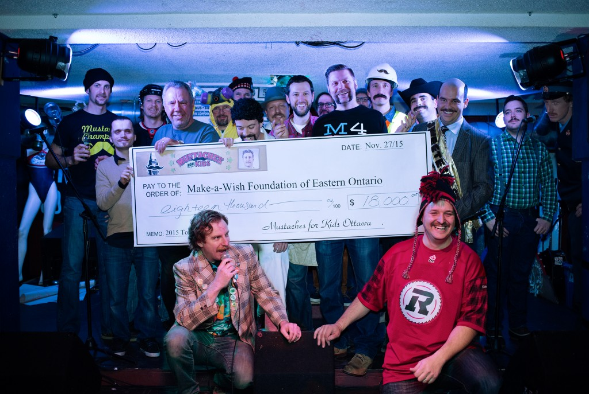

‘Stache Bash Finale
When: Saturday, November 26, 2016 – 7:00pm
Where: Pressed
Participants: More details and Please register here
‘Stache Bash Finale? What the heck!?
Congratulations, everyone! You’ve almost completed the daunting task of raising a charity Mustache from infancy, over a month ago, to full and virile ‘Stache-hood today. And all while raising money for a very worthy cause! Gentlemen, we salute you.

But you’re not done yet! Below you’ll find some important information regarding this year’s Sweetest Mustache Competition: some strategy hints for the competition itself, and some instructions on what will be expected of you. In no particular order:
- Have Your Donations Organized & Ready – Though we all have fun with the Mustache pageant part of ‘Stache Bash, let’s not forget that this whole thing is about raising money for the kids. Bring with you the donations you’ve collected along with your completed pledge form (if you’ve still got it). Place them in an envelope, with your name and the total amount that you’ve raised (in both checks and cash) written on the outside. We like to do a rough accounting, and at the end of the night announce how much we’ve raised.
- Be On Time – This is so important we probably should have put it first. So instead, we’ll put it again.
- Be On Time – Seriously, we can’t emphasize this enough. Be at the pub at 7:30PM SHARP! We’ll start the competition as soon after 8:00 as we can get everybody organized. We’ve got a lot of growers this year, and we can’t afford to dilly-dally.
- Invite Your Friends – The more the merrier. Seriously, the sight of nearly 50 charity Mustaches paraded for your amusement is not one to be missed. And maybe they’ll be so moved that they decide to donate right there.
- Have Fun – Relax! Let’s have some fun out here! This game’s fun, OK? Fun goddamnit. And don’t hold the ball so hard, OK? It’s an egg. Hold it like an egg.
- Everyone Has A Chance To Win – Remember, the Mustache is more in the Heart, than on the Face. If you really sparkle in the Talent round, that can make up for a less-than-perfect Bathing Suit section.
- If You’re Anything Like Us – You might want to avoid making plans on Saturday.
Good luck, and good growing!